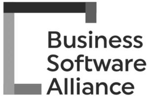

Trade Mark Journal No.2025/029 18 July 2025
WO0000001861650 (9)
Office of origin: United States of America
Date of International Registration:18 April 2025
Date of designation in the UK:
18 April 2025

A PARTIAL OR BROKEN SQUARE THAT APPEARS IN FOUR DIFFERENT LEVELS OF SHADING OR SATURATION WITH THE LOWER-RIGHT CORNER BROKEN OR UNFINISHED. OUT OF THE LOWER-RIGHT CORNER OR UNFINISHED SECTION APPEAR THE WORDING: "Business Software Alliance," STACKED WITH ONE WORD PER LINE, WITH INITIAL CAPITAL LETTERING THAT LINES UP TO READ, "BSA" VERTICALLY.
International priority date claimed: 12 February 2025
(United States of America)
(99039478)
- Class 9
- Downloadable electronic publications in the nature of books, reports, newsletters, white papers, educational guides, and position papers in the field of software, AI, privacy, cybersecurity, IP, trade, data, cross-border data, workforce, procurement, government, copyright and IP protection for computer software, AI, and data products, computer software, AI, and data copyright and IP enforcement, copyright, IP, international software and data trade issues, policy, policies, and policy-making associated with all of the aforementioned areas and subjects, advocacy associated with all of the aforementioned topics and subjects, and education associated with all of the aforementioned topics and subjects; electronic publications, namely, books, reports, newsletters, white papers, educational guides, and position papers featuring software, AI, privacy, cybersecurity, IP, trade, data, cross-border data, workforce, procurement, government, copyright and IP protection for computer software, AI, and data products, computer software, AI, and data copyright and IP enforcement, copyright, IP, international software and data trade issues, policy, policies, and policy-making associated with all of the aforementioned areas and subjects, advocacy associated with all of the aforementioned topics and subjects, and education associated with all of the aforementioned topics and subjects recorded on computer media; downloadable educational publications, namely, printable books, reports, newsletters, white papers, educational guides, and position papers in the field of software, AI, privacy, cybersecurity, IP, trade, data, cross-border data, workforce, procurement, government, copyright and IP protection for computer software, AI, and data products, computer software, AI, and data copyright and IP enforcement, copyright, IP, international software and data trade issues, policy, policies, and policy-making associated with all of the aforementioned areas and subjects, advocacy associated with all of the aforementioned topics and subjects, and education associated with all of the aforementioned topics and subjects; downloadable video recordings featuring information about software, AI, privacy, cybersecurity, IP, trade, data, cross-border data, workforce, procurement, government, copyright and IP protection for computer software, AI, and data products, computer software, AI, and data copyright and IP enforcement, copyright, IP, international software and data trade issues, policy, policies, and policy-making associated with all of the aforementioned areas and subjects, advocacy associated with all of the aforementioned topics and subjects, and education associated with all of the aforementioned topics and subjects; downloadable multimedia files containing video relating to software, AI, privacy, cybersecurity, IP, trade, data, cross-border data, workforce, procurement, government, copyright and IP protection for computer software, AI, and data products, computer software, AI, and data copyright and IP enforcement, copyright, IP, international software and data trade issues, policy, policies, and policy-making associated with all of the aforementioned areas and subjects, advocacy associated with all of the aforementioned topics and subjects, and education associated with all of the aforementioned topics and subjects; downloadable video files in the field of software, AI, privacy, cybersecurity, IP, trade, data, cross-border data, workforce, procurement, government, copyright and IP protection for computer software, AI, and data products, computer software, AI, and data copyright and IP enforcement, copyright, IP, international software and data trade issues, policy, policies, and policy-making associated with all of the aforementioned areas and subjects, advocacy associated with all of the aforementioned topics and subjects, and education associated with all of the aforementioned topics and subjects; downloadable audio files featuring informaiton about software, AI, privacy, cybersecurity, IP, trade, data, cross-border data, workforce, procurement, government, copyright and IP protection for computer software, AI, and data products, computer software, AI, and data copyright and IP enforcement, copyright, IP, international software and data trade issues, policy, policies, and policy-making associated with all of the aforementioned areas and subjects, advocacy associated with all of the aforementioned topics and subjects, and education associated with all of the aforementioned topics and subjects; downloadable multimedia files containing audio relating to software, AI, privacy, cybersecurity, IP, trade, data, cross-border data, workforce, procurement, government, copyright and IP protection for computer software, AI, and data products, computer software, AI, and data copyright and IP enforcement, copyright, IP, international software and data trade issues, policy, policies, and policy-making associated with all of the aforementioned areas and subjects, advocacy associated with all of the aforementioned topics and subjects, and education associated with all of the aforementioned topics and subjects.
BSA Business Software Alliance, Inc.
Representative: Robert Kimmer Mei & Mark LLP, P.O. Box 65981, Washington DC 20035-5981, UNITED STATES OF AMERICA